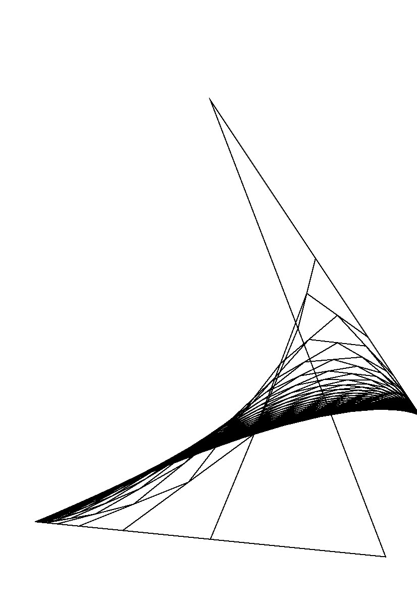

%!PS-Adobe-2.0
%%Title: delta.ps
%%Pages: 1 1
%%EndComments
/No_bezier %[ {start_} {strut_1_} {strut_2_} {end_} steps_ No_bezier
{
{
newpath
/path_ counttomark 1 sub array def
path_ path_ length 1 sub 2 index put
dup exec moveto
path_ length 2 sub -1 0{
[
3 -1 roll 3 index 2 copy
0 get exch 0 get add 2 div
3 1 roll
1 get exch 1 get add 2 div
]cvx
path_ 3 1 roll put
dup exec lineto
}for
0 setgray 1 setlinewidth stroke
path_ cvx exec
}repeat
cleartomark
}def
%%EndProlog
%%Page:1 1
[ {50 100} {550 50} {300 700} {600 250} 50 No_bezier
showpage
%%Trailer
%%EOF
